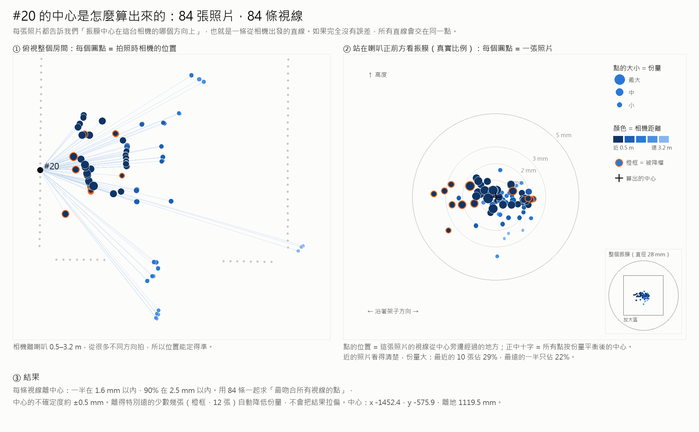
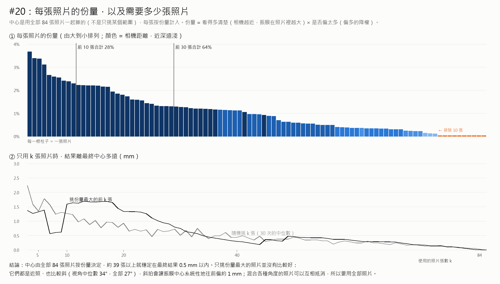
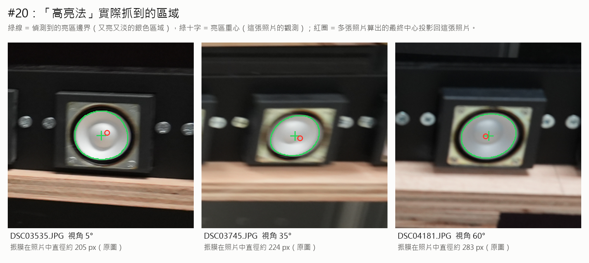
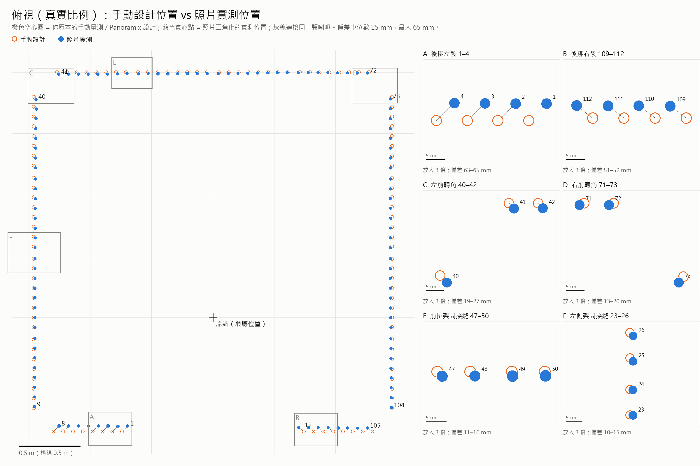
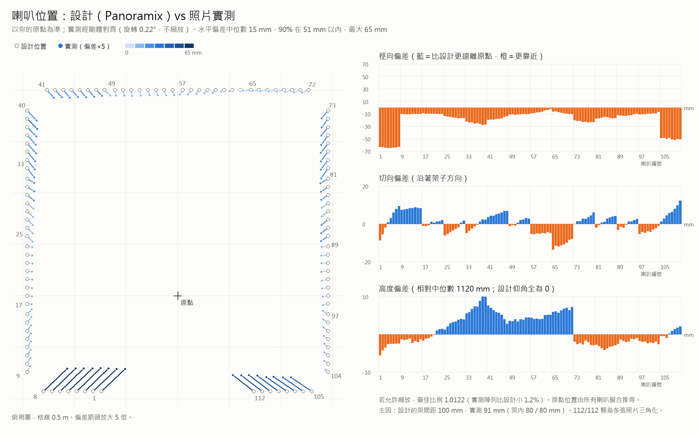
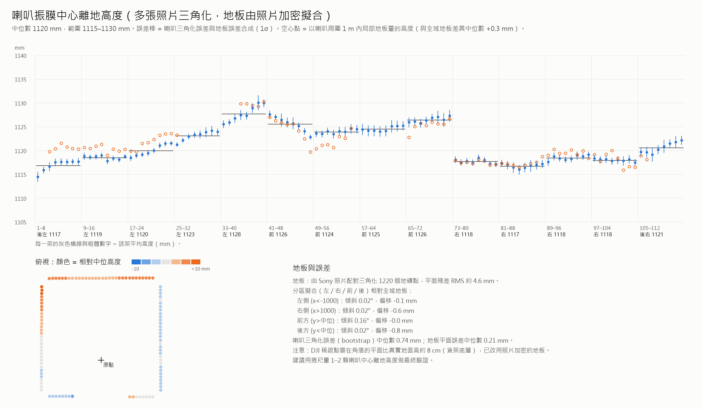

結果與驗證
2026-10-13 量測。目前採用的版本：每張 Sony 照片對齊 DJI 骨架後多視角三角化（未使用 Sony 光束法平差，原因見原理教學第 13 章）。
精度
| 檢查 | 做法 | 結果 |
|---|---|---|
| Bootstrap | 每顆喇叭的照片隨機重抽樣 200 次，看中心散布 | 中位數 0.74 mm，90% ≤ 1.17 mm |
| 架內間距 | 每顆分別計算後，同架相鄰兩顆的距離（實際 80 mm） | 80.10 ± 0.74 mm |
| 直線度 | 同架 8 顆離擬合直線的距離 | 中位數 0.6 mm |
| 留一驗證 | 拿掉一顆，用同架其他顆推算它的位置再比較 | 中位數 0.8 mm |
| 架間距離 | 相鄰架子端點之間（你實際確認約 9.0 cm） | 約 88–93 mm |
| 架子朝向 | 8 顆跨 56 cm 擬合直線 | 約 ±0.2° |
還沒驗證的系統誤差：整體尺度依賴 80 mm（建議捲尺量 41 號↔72 號，預測 2514 mm；設計 2540 mm，差異來自 3 個架間空隙 100 → 約 91 mm）；斜視造成約 1 mm 往前偏，所有喇叭相同。



與設計比較
以只有旋轉＋平移（不縮放）的轉換對齊到你的設計原點。中位數差 15 mm、最大 64 mm；整體旋轉 0.23°；後排比設計更靠近原點約 5–6 cm；設計的架間距 100 mm，實測約 91 mm；架子朝向與設計差 −0.62° 到 +0.91°；原點落在左右對稱軸上（偏 0.1 mm）。


高度
地板平面由 Sony 照片兩兩三角化的地磚點重新擬合（DJI 模型中的「地板」其實是架子底部，高了約 8 cm）。振膜中心高度 1115–1130 mm，中位數 1120 mm；只用周圍 1 m 局部地板計算，平均只差 0.3 mm。

人工檢查拼圖
每根架子從分散的照片中抽幾張，標上系統認定的編號，用來人工確認背景線索是否一致（例如左右兩側的牆和椅子不同）。「未註冊」版本只用 COLMAP 沒接上的照片，是比較嚴格的檢查。
對 WFS 的影響
把位置誤差換成每顆喇叭的到達時間誤差模擬：用設計值時 RMS 約 31 µs，用實測值後約 2.1 µs。在 2 kHz，最差的同調損失由 −4.6 dB 變成 −0.01 dB。
檔案下載
| 檔案 | 給誰用 | 內容 |
|---|---|---|
| 1012_measured.txt | Panoramix | 直接載入；只改 aed 與 directions 兩行 |
| panoramix_bus10_measured.txt | Panoramix | 只有那兩行 |
| panoramix_bus10_measured.csv | 檢查 | 每顆 x、y、方位角、距離、朝向與設計差 |
| speaker_centers_mm.csv | 分析 | 3D 中心（mm，原點在陣列中心正下方地板）、誤差、照片數 |
| speaker_heights.csv | 分析 | 離地高度（全域與局部地板） |
| design_vs_measured.csv | 分析 | 逐顆與設計的偏差（徑向、切向、高度） |
| speaker_photos.csv | 分析 | 喇叭 → 照片對應與原圖像素座標 |
| 1012_design.txt | 對照 | 原始設計檔 |